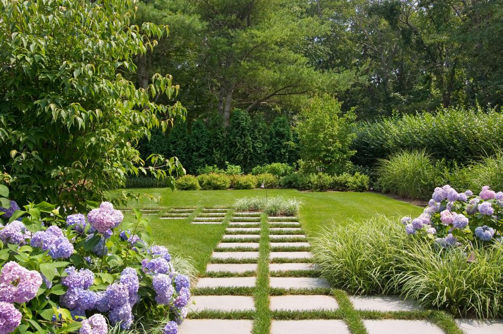

01 / DESIGN
Landscape
Landscape
Design
Great landscape design finds the perfect balance between beauty and purpose.
Whether you're starting with an empty yard or reimagining an established property, we develop cohesive outdoor plans that reflect your surroundings and the way you live.
- Complete landscape planning
- Garden and planting layouts
- Pathways and gathering spaces
- Property transformations